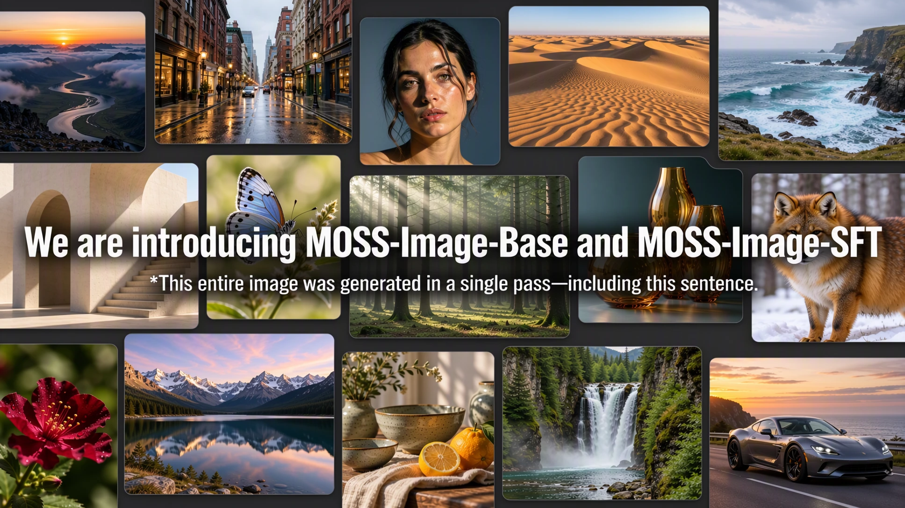
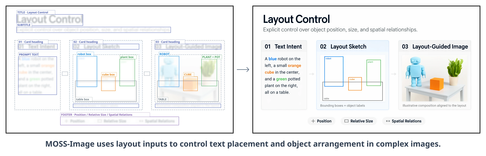

Text-to-Image Generation
Generate images from natural-language descriptions with MOSS-Image-Base or MOSS-Image-SFT, using a shared inference interface.

MOSS-Image is a text-to-image model family from OpenMOSS, comprising a base model and a curated-data fine-tuned model. In addition to natural-language prompts, MOSS-Image supports native text-driven layout generation: objects, rendered text, and their spatial positions can be specified in a JSON prompt. The family combines a compact 5B backbone, prompts of up to 4K tokens, strong text rendering, and versatile anime and photorealistic styles. Python and Gradio interfaces use a shared Diffusers pipeline.
— Introducing MOSS-Image-Base, with code and model weights available.
Layout control, strong text rendering, prompts of up to 4K tokens, anime and photorealistic styles, and a 5B backbone designed for efficient generation and fine-tuning. Training uses heterogeneous GPU platforms.
Generate images from natural-language descriptions with MOSS-Image-Base or MOSS-Image-SFT, using a shared inference interface.
Specify a scene, its objects, and text with a structured JSON prompt. Bounding boxes describe the position and size of individual elements.
A 5B backbone supports prompts of up to 4K tokens and fine-tuning for custom tasks and domains. Model weights are licensed under Apache-2.0.
Text, illustration, photography and visual design, composed as in the project showcase. Open either image to explore it at full resolution.
Layouts also support controlled editing and user-friendly layout tools. Edit text, element descriptions and bounding boxes to adjust image content and composition in a structured way.
MOSS-Image accepts layout specifications through the same prompt interface used for text-to-image generation. The generated result below illustrates layout control; the JSON example that follows describes a travel poster with a title and a mountain illustration.

Bounding-box visualization · input specification only
{
"summary": {
"meta": ["poster"],
"canvas": "single",
"caption": "A minimalist travel poster with a cream background, a blue mountain illustration, and the title EXPLORE at the top."
},
"items": [
{
"label": "text",
"caption": "Large dark-blue uppercase title centered at the top.",
"text": "EXPLORE",
"bbox": [-416, -384, -288, 384]
},
{
"label": "object",
"caption": "A flat blue mountain illustration in the lower center.",
"bbox": [-192, -288, 384, 288]
}
],
"bbox_coord_space": "abs_centralized",
"bbox_format": "yxyx"
}[y_min, x_min, y_max, x_max] and are measured in pixels relative to the canvas center. The diagram visualizes the input layout, not a model-generated result.Paste the JSON above into Gradio’s Prompt field and set width and height to 1024. With the Python pipeline below, load the JSON and pass it as the prompt:
import json
from pathlib import Path
layout = json.loads(Path("layout.json").read_text())
image = pipe(
json.dumps(layout, ensure_ascii=False),
height=1024, width=1024,
num_inference_steps=50, guidance_scale=3.0,
uncond_skip_layers=[22],
generator=torch.Generator("cpu").manual_seed(42),
).images[0]
image.save("layout.png")The two checkpoints share the same architecture and sampling interface.
| Model | Description | Weights |
|---|---|---|
| MOSS-Image-Base | Base text-to-image model | Hugging Face ↗ |
| MOSS-Image-SFT | Fine-tuned from MOSS-Image-Base on curated data | Hugging Face ↗ |
Weights: Apache-2.0. The pipeline code and third-party components retain their respective licenses.
In this example, SFT produces clearer text grouping and a more organized whiteboard layout.
Use Python 3.10+ and an NVIDIA GPU. In a dedicated Python environment, install a PyTorch build compatible with your CUDA environment, then run:
git clone https://github.com/OpenMOSS/MOSS-Image.git
cd MOSS-Image
python -m venv .venv
source .venv/bin/activate
pip install -r requirements.txtimport torch
from diffusers import DiffusionPipeline
pipe = DiffusionPipeline.from_pretrained(
"OpenMOSS-Team/MOSS-Image-Base",
custom_pipeline="pipeline_moss_image",
trust_remote_code=True,
torch_dtype={"default": torch.bfloat16, "vae": torch.float32},
)
pipe.scheduler = type(pipe.scheduler).from_config(pipe.scheduler.config)
pipe.to("cuda")
image = pipe(
"A wide view of a refrigerator beside a kitchen counter with a fruit bowl. A small sticky note on the refrigerator door is handwritten in Chinese:“\n记得买牛奶和鸡蛋！\n牛奶两盒，鸡蛋一打。\n顺便带一袋面包。”",
height=1456,
width=1456,
num_inference_steps=50,
guidance_scale=3.0,
uncond_skip_layers=[22],
generator=torch.Generator("cpu").manual_seed(42),
).images[0]
image.save("refrigerator_note.png")For prompts, layout inputs and LoRA training guidance, see the English user guide or 中文用户指南.
pip install -e '.[ui]'
python gradio_app.py --model OpenMOSS-Team/MOSS-Image-BaseAdvanced settings offer GPU resident, Component, and Sequential memory modes. If memory is insufficient, select Sequential or reduce image size. Compile DiT is disabled by default and unavailable in Sequential mode.
Install the native plugin by searching for MOSS-Image in ComfyUI Manager. Integration into the official ComfyUI repository is in progress.
Turn image ideas into detailed captions or spatial Layout prompts with the MOSS-Image Prompt Enhancer skill, designed for GPT-6-family agents with local file and Python tools.
The bundled script converts pixel-coordinate drafts into compact JSON with integer centered coordinates. It prepares prompts without calling an image-generation service.
$moss-image-prompt-enhancer with your image idea, caption or Layout output requirements, and canvas dimensions.If you use MOSS-Image in your research, please cite the project repository.
@misc{mossimage2026,
title = {MOSS-Image},
author = {{OpenMOSS Team}},
year = {2026},
howpublished = {\url{https://github.com/OpenMOSS/MOSS-Image}}
}